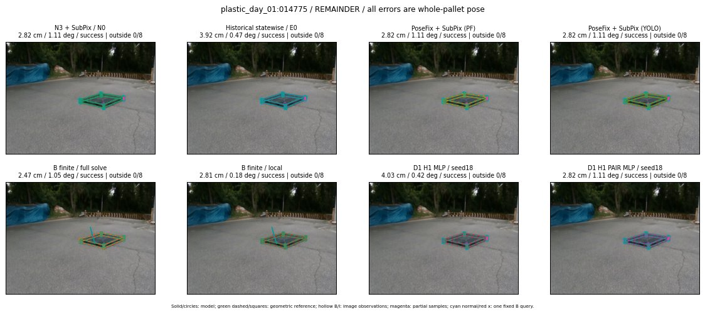

Whole-pallet pose errors; reference is a fixed geometric annotation, not certified physical GT.

Scores are uncalibrated logits. N0 retention is a numerical pose alias; it differs from H0 none or B fallback. B/I and profiles in baseline/B panels are original observations; L panels use new D1 observations. Only one deterministic supported B query is shown in a thumbnail; full support counts are below. Grey privacy rectangles edit the display copy only and are unrelated to O states; all observations were measured on original pixels. Thumbnails use JPEG quality85; detailed scientific panels are PNG.
| Method | Whole pose / cm, deg | Actual source | Selected ID | Score | Archived candidates | Eligible | N0 retained | H0 none | Fallback | Finite profiles |
|---|---|---|---|---|---|---|---|---|---|---|
| Raw YOLO + F | 15.93 cm / 0.87 deg / failure | OTHER | None | N/A | N/A | N/A | False | N/A | None | N/A |
| N3 + SubPix / N0 | 2.82 cm / 1.11 deg / success | N0 | None | N/A | N/A | N/A | True | N/A | None | N/A |
| Historical statewise / E0 | 3.92 cm / 0.47 deg / success | E0_REGENERATED | None | N/A | N/A | N/A | False | N/A | False | N/A |
| PoseFix raw | 15.41 cm / 0.98 deg / failure | OTHER | None | N/A | N/A | N/A | False | N/A | None | N/A |
| PoseFix + SubPix (PF) | 2.82 cm / 1.11 deg / success | OTHER | None | N/A | N/A | N/A | False | N/A | False | historical support records 9; finite audit N/A |
| PoseFix + SubPix (YOLO) | 2.82 cm / 1.11 deg / success | OTHER | None | N/A | N/A | N/A | False | N/A | False | historical support records 9; finite audit N/A |
| Historical L, seed18 | 2.82 cm / 1.11 deg / success | N0 | N0 | N/A | 71 | 71 | True | True | True | N/A |
| Historical B fixed bank | 4.03 cm / 0.42 deg / success | OTHER | LOGGED/G10/ORIGINAL_WD/outline_consider/11 | N/A | N/A | N/A | False | N/A | False | N/A |
| Historical B full | 2.46 cm / 1.05 deg / success | OTHER | NEW/B/ORIGINAL_WD/h0/G13/ORIGINAL_WD/sample/0/PROPOSED_NATIVE_YAW_0 | N/A | N/A | N/A | False | N/A | False | N/A |
| Historical edge full | 2.09 cm / 0.63 deg / success | OTHER | NEW/edge/ORIGINAL_WD/h0/G13/ORIGINAL_WD/sample/0/PROPOSED_NATIVE_YAW_0 | N/A | N/A | N/A | False | N/A | False | N/A |
| Historical AB full | 2.40 cm / 1.03 deg / success | OTHER | NEW/AB/ORIGINAL_WD/h0/G13/ORIGINAL_WD/sample/0/PROPOSED_NATIVE_YAW_0 | N/A | N/A | N/A | False | N/A | False | N/A |
| B finite / fixed bank | 4.03 cm / 0.42 deg / success | OTHER | LOGGED/G10/ORIGINAL_WD/outline_consider/11 | N/A | N/A | N/A | False | N/A | False | 20/20 |
| B finite / full solve | 2.47 cm / 1.05 deg / success | OTHER | NEW_FINITE/B/ORIGINAL_WD/h0/G13/ORIGINAL_WD/sample/0/PROPOSED_NATIVE_YAW_0 | N/A | N/A | N/A | False | N/A | False | 20/20 |
| B finite / local | 2.81 cm / 0.18 deg / success | OTHER | NEW_FINITE/B/ORIGINAL_WD/h0/N0_LOCAL_SAME_PHYSICAL_POSE/ORIGINAL_WD | N/A | N/A | N/A | False | N/A | False | 20/20 |
| Edge finite / full solve | 3.06 cm / 0.65 deg / success | OTHER | NEW_FINITE/edge/ORIGINAL_WD/h0/G13/ORIGINAL_WD/sample/0/PROPOSED_NATIVE_YAW_0 | N/A | N/A | N/A | False | N/A | False | 20/20 |
| D0 H0 MLP / seed18 | 2.82 cm / 1.11 deg / success | N0 | N0 | 3.682016372680664 | 37 | 37 | True | True | True | N/A |
| D0 H0 MLP / seed19 | 2.82 cm / 1.11 deg / success | N0 | N0 | 4.451711654663086 | 37 | 37 | True | True | True | N/A |
| D0 H0 MLP / seed20 | 2.82 cm / 1.11 deg / success | N0 | N0 | 2.2107622623443604 | 37 | 37 | True | True | True | N/A |
| D0 H1 MLP / seed18 | 4.03 cm / 0.42 deg / success | OTHER | G10/ORIGINAL_WD/endpoint/11 | -1.2495094537734985 | 37 | 37 | False | False | False | N/A |
| D0 H1 MLP / seed19 | 4.03 cm / 0.42 deg / success | OTHER | G10/ORIGINAL_WD/endpoint/11 | -1.444189190864563 | 37 | 37 | False | False | False | N/A |
| D0 H1 MLP / seed20 | 4.03 cm / 0.42 deg / success | OTHER | G10/ORIGINAL_WD/endpoint/11 | -2.4581689834594727 | 37 | 37 | False | False | False | N/A |
| D1 H0 MLP / seed18 | 2.82 cm / 1.11 deg / success | N0 | N0 | 7.148005962371826 | 37 | 37 | True | True | True | N/A |
| D1 H0 MLP / seed19 | 2.82 cm / 1.11 deg / success | N0 | N0 | 7.615836143493652 | 37 | 37 | True | True | True | N/A |
| D1 H0 MLP / seed20 | 2.82 cm / 1.11 deg / success | N0 | N0 | 7.275524139404297 | 37 | 37 | True | True | True | N/A |
| D1 H1 MLP / seed18 | 4.03 cm / 0.42 deg / success | OTHER | G10/ORIGINAL_WD/endpoint/11 | 0.2994628846645355 | 37 | 37 | False | False | False | N/A |
| D1 H1 MLP / seed19 | 4.03 cm / 0.42 deg / success | OTHER | G10/ORIGINAL_WD/endpoint/11 | 0.5248674750328064 | 37 | 37 | False | False | False | N/A |
| D1 H1 MLP / seed20 | 4.03 cm / 0.42 deg / success | OTHER | G10/ORIGINAL_WD/endpoint/11 | -0.20612847805023193 | 37 | 37 | False | False | False | N/A |
| D1 H1 ROLE AFFINE / seed18 | 4.03 cm / 0.42 deg / success | OTHER | G10/ORIGINAL_WD/endpoint/11 | 0.71485435962677 | 37 | 37 | False | False | False | N/A |
| D1 H1 ROLE AFFINE / seed19 | 3.92 cm / 0.47 deg / success | E0_REGENERATED | E0_REGENERATED | -0.2405986338853836 | 37 | 37 | False | False | False | N/A |
| D1 H1 ROLE AFFINE / seed20 | 4.03 cm / 0.42 deg / success | OTHER | G10/ORIGINAL_WD/endpoint/11 | 0.471929669380188 | 37 | 37 | False | False | False | N/A |
| D1 H1 PAIR MLP / seed18 | 2.82 cm / 1.11 deg / success | N0 | N0 | -0.2668449878692627 | 37 | 2 | True | False | False | N/A |
| D1 H1 PAIR MLP / seed19 | 2.82 cm / 1.11 deg / success | N0 | N0 | -0.2869170606136322 | 37 | 2 | True | False | False | N/A |
| D1 H1 PAIR MLP / seed20 | 2.82 cm / 1.11 deg / success | N0 | N0 | 0.0710943415760994 | 37 | 2 | True | False | False | N/A |
| D1 H1 PAIR ROLE AFFINE / seed18 | 3.92 cm / 0.47 deg / success | E0_REGENERATED | E0_REGENERATED | 0.31021440029144287 | 37 | 2 | False | False | False | N/A |
| D1 H1 PAIR ROLE AFFINE / seed19 | 3.92 cm / 0.47 deg / success | E0_REGENERATED | E0_REGENERATED | 0.16314539313316345 | 37 | 2 | False | False | False | N/A |
| D1 H1 PAIR ROLE AFFINE / seed20 | 3.92 cm / 0.47 deg / success | E0_REGENERATED | E0_REGENERATED | 0.09976918250322342 | 37 | 2 | False | False | False | N/A |
| Regenerated common E0 | 3.92 cm / 0.47 deg / success | E0_REGENERATED | E0_REGENERATED | N/A | N/A | N/A | False | N/A | False | N/A |